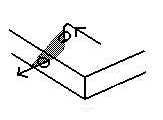

| A | B | C | D | E | F | G | H | I | J-L | M-N | O | P-Q | R | S | T | U-V | W-Z |
| International Language Terminology Cross-Reference | General Glossary of Footwear Types | ||||||||||||||||
Half Moon Knife
See Trenket
Hand-Leather
(Modern terms include: Shoemaker's Mitten)
A piece of leather wrapped around the left hand to protect the skin of the
shoemakers hand from being cut by the thread when yerking the thread. Might be
a medieval tool.
Handwax
A modern generic term for shoemaker's wax. Also called "hand". This term
doesn't seem to show up until after the introduction of the sewing machines in the 1860s.
These machines used a different sort of wax to cere the threads. It does not appear
in Johnson 1755, Websters 1828, OED, OAD.
Head Knife
See Trenket
Heel Block (Footynge Block)
This three inch cube is the wooden piece that the shoemaker keeps his left heal on to
tighten the stirrup, as needed. [Holme]
Heel Cover
Heel cup
A piece of leather (part of the upper) on the outside of the back of the shoe covering the
seam joining the quarters. It may be a narrow strip or a long, vertical piece of leather
in line with the heel. [Vass]
Heel edge
The outer surface of the heel. Usually it is black, but sometimes it is colored to match
the upper leather If it is not colored, the individual lifts are readily discernible.
[Vass]
Heel lifts
Heel Liner
(Modern terms include:
Heel Stiffener Inside Counter, Counter)
A piece of lining leather used as a stiffening or internal reinforcement in the
rear quarters or heel area. It is most frequently sewn inside the shoe. In
medieval shoes it is whipped in place, and is usually invisible from the
outside. Please note that we have no idea what these were called in the Middle
Ages, and the closest English shoemaking term, counter, has too many conflicting
interpretations depending on who you ask. Any of the layers by which a heel is built (stacked), except for the cupping and the top
piece. [Goubitz, 2001]
Heel Parer
A person who makes heels [OED 2d Ed.]
Heel Plate
Anyone of a number of different devices, all of which are designed to extend the wear of
the heel. In it's most modern form, it is a half moon shaped piece of nylon, adhesive
backed that is placed on the heel at the point of maximum wear and nailed in place.
Earlier (and sometimes still today) this plate was made of steel. Other variations include
v-plates, quarter tips, circlettes, all of which are inset into the heel, and going back
at least to the Civil War, horse shoe plates, which are mounted to the surface. [James
Howell]
Heel quarters
The part of the shoe around the heel, the counters [Holme, 1688][OED 2d Ed.]
Heel seam
Sometimes used (erroneously) to refer to the "Back seam" (q.v). The Heel
Seam refers to the seam running up the back of the shoe's heel, not the wearer's.
Heel section
The back of the shoe. [Vass]
Heel Shave
A type of spokeshave used to make heels [OED 2d Ed.]
Heel-stiffener
See Counter
Heel Tip
A metal heel plate [OED 2d Ed.]
Heel wedge
Pieces of leather with a tapering profile inserted between the heel lifts to heighten
the heel along the back. [Goubitz, 2001]
Helling Sticks
An 18th century term for Hollin Sticks. [Saguto] See Polishing bone.
Hidden stitch
A technique of sewing (See tunnel stitch). [Goubitz, 2001]
High Instep
See Girths
High Shoe
(Other medieval spellings include: Heigh Scoh, Scoh, Unhege-Sceo
Modern terms include: Ankle Boot, Ankle Shoe, Half boot)
A shoe that extends to the ankle, or slightly higher. There is no way to be
more specific between the high shoe and low boot, as the medieval meaning are
not clear.
Hold
This concept is one of
the most basic in sewing leather, but can a trick to describe. Inserting thread
into leather, in order to grab that leather is making a stitch. Once it�s
grabbed the leather and is gripping it, it and the leather being gripped make up
a hold. The two terms are very similar, and may appear synonymous. They are
not. The hold is determined in part by the thread, and how that thread is
passed through the leather, but also by the amount of the leather captured
within the stitch on each side of the seam, how far back from the edge the hole
is made, how deeply the hole is made through the leather. [Saguto]

Hole, Holed
v. To make a hole, as
for stitching. This term is apparently not a medieval shoemaking term, although
its use is consistent with medieval use. [Devlin, 1840]
Hollin Sticks
(also Helling Sticks, Shoulder Sticks)
There are a number of types and shapes of these sticks, with various types of
�shoulders�, or raised guides to help shape shoe soles. (See also Bones and
Sticks)
Hueses
(Hauses, Husseaus)
A kind of legging or hose. Also possibly boots that reach the thigh. They can
have pikes, and so may be footed hose with leather soles. They are possibly
related to chaucers.
Footwear of the Middle Ages - Glossary of Footwear Terminology H,
Copyright � 1999, 2000, 2001, 2005 I. Marc Carlson.
This page is given for the free exchange of information, provided the author's name is
included in all future revisions, and no money change hands, other than as expressed in
the Copyright Page.